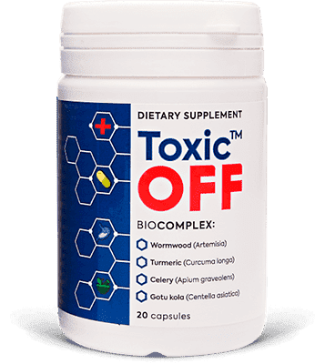

Según la OMS, en 2019, la frecuencia de infección por invasión
parasitaria aumentó un 17,6%. Además, estas cifras incluyen no solo la población de los
países en desarrollo, sino también una región europea próspera.
La aparición generalizada de helmintiasis se explica por el curso
asintomático de la enfermedad en las primeras etapas. Es posible que una persona infectada
no sea consciente de la presencia de parásitos durante mucho tiempo, pero al mismo tiempo
infecte a otros.
¿Por qué son peligrosos los helmintos?
Se conocen más de 360 tipos de helmintos. La mayoría de ellos
parasitan en los intestinos o el hígado, pero pueden migrar a cualquier órgano y sistema:
pulmones, corazón, sistema nervioso central, músculos, globos oculares y cerebro.
Consecuencias de los parásitos:
Desarrollo de anemia, avitaminosis y anorexia;
Daño de tejidos y órganos. Aumento del riesgo de desarrollar
infecciones y envenenamiento de la sangre;
Patologías del sistema nervioso. Las toxinas parasitarias
provocan insomnio, migrañas, irritabilidad, crisis nerviosas, infartos y derrames
cerebrales;
Reacciones alérgicas (erupción cutánea, picazón, grietas y
heridas);
Formación de papilomas que pueden convertirse en cáncer;
En los niños, pueden causar retrasos en el desarrollo, dar lugar
a complicaciones peligrosas;
Provocan impotencia en los hombres;
Reducen la fertilidad en las mujeres.
¡No ignores el problema!
¿Cómo ocurre la infección por parásitos?
El estereotipo es que la persona solo se puede infectar a través de
los alimentos y el agua contaminada. Los parásitos pueden penetrar en la piel. Por ejemplo,
al usar el transporte público o el baño.
Las larvas penetran en los capilares a través de los poros y son
transportadas por todo el cuerpo con el torrente sanguíneo. La persona no siente dichos
pinchazos, ya que es bastante difícil notar la infección. También es posible infectarse por
parásitos de animales e insectos al inhalar huevos microscópicos junto con polvo.
3 métodos principales para
combatir los parásitos
Dieta antiparasitaria
- Controlar la calidad de los alimentos consumidos: no consumir
verduras, frutas y hierbas sin lavar, carnes sin procesar (con sangre poco hecha), pescados
crudos (sushi, sashimi, etc.) y leche cruda.
- Reducir la ingesta de azúcar y dulces, ya que estimulan la formación
de microflora patógena en los intestinos.
No olvidar las reglas de higiene personal
En el mundo moderno, es difícil no tocar las barrandillas en el
transporte público, no usar la vajilla en cafeterías públicas o en los baños
públicos. Simplemente sigue estas reglas básicas: lávate las manos con regularidad y no
toques la cara.
Desintoxicación
Para eliminar los parásitos y sus toxinas del cuerpo, hay que
someterse a un ciclo de desintoxicación con el producto antiparasitario .
Este producto es muy eficaz, no tiene contraindicaciones ni efectos
secundarios. Su acción está dirigida a crear condiciones incómodas para los parásitos en los
que pierden interés en la reproducción, se debilitan y se expulsan fácilmente del cuerpo.

La composición de incluye extractos de
plantas (ajenjo, cúrcuma, gotu kola, emblica y apio) con un potente efecto
antiparasitario:
Causan la parálisis de parásitos;
Estimulan la salida de bilis, lo que ayuda a eliminar los
parásitos inmovilizados, sus larvas y huevos;
Regeneran los tejidos dañados y la microflora intestinal, lo
que ayuda a restaurar la inmunidad y eliminar el problema del peso inestable;
Crean un ambiente alcalino saludable en los intestinos que
protege contra la reinfección.
98% de los infectados se deshizo por completo de los parásitos
89% notó una mejora del funcionamiento de todo el cuerpo
75% toma como medida preventiva y
está satisfecho con el resultado
Muchos están acostumbrados a no prestar atención a sentirse mal. Puede
que ni siquiera lo sospeches, pero los parásitos ya viven en tu cuerpo con una probabilidad
del 97-98%. Las larvas pueden estar en cualquier lugar: en la sangre, los intestinos, los
pulmones, la próstata, el corazón o el cerebro.
Convertirse en portador de parásitos es más fácil que comerse una
hamburguesa. Basta con lavarse mal las manos antes de comer, sentarse en el suelo, besar
a una persona infectada, no tratar un rasguño o jugar con las mascotas. Recomiendo tomar
el ciclo de tratamiento con antes de que
los parásitos hayan causado un daño irreparable.
Especialmente para nuestros lectores, el
fabricante vende este producto antiparasitario a un precio especial. La cantidad de envases
con un 50% de descuento es limitada.
Parasitólogo de infecciones Experiencia laboral 17 años
Coautor de un libro de texto sobre infectología
Comentarios sobre el artículo:
Victoria
¡¡¡¡¡Qué horror!!!!! ¡Podemos seguir llevando una vida
normal y ni siquiera saber que los parásitos viven dentro de nosotros! Tengo
tanto miedo que me lavo las manos 30 veces al día. Me voy a pedir este
producto. ¡Muchas gracias por el consejo!
Dado que ya ha comenzado una conversación tan íntima, he
de admitir que en mi familia también hubo ese problema. Pero yo ya conocía de antes, incluso mi hermana lo
estuvo tomando un tiempo, así que comenzamos el tratamiento de inmediato y nos
curamos rápidamente. Estoy completamente de acuerdo con el autor, más vale
prevenir que curar.
Oye, parece ser que nunca te has encontrado con
helmintos, por eso razonas así. Te voy a decir una cosa: es muy difícil
hallarlos. Algunos viven años y no sospechan que están infectados.
salvó a toda
mi familia. Mi hijo se trajo un cachorro de la calle, y bueno, mi marido y yo
decidimos quedárnoslo. ¿Os podéis imaginar cuántos problemas tuvimos con ese
cachorro? Primero, fue mi marido quien empezó a tener síntomas. Después, mi
hijo. Me di cuenta de que no era un resfriado común. Fuimos a hacernos una
pruebas y nos confirmaron que era una infección por parásitos. Lo pasamos mal 2
semanas intentando curar la infección con métodos populares. ¡Qué tontería! Tan
pronto como comenzamos el ciclo de tratamiento con este producto antiparasitario , nos sentimos
mejor al instante. La flatulencia y los vómitos desaparecieron al segundo día.
Una semana después, las pruebas mostraron una recuperación completa.
Es cierto que puedes contraer parásitos en el transporte
público, en el trabajo, en la oficina de correos y en la comida. A mi marido le
encanta la carne con sangre, por eso tenemos productos antiparasitarios que no
deja de usar. Es mejor ir con cuidado. Me voy a pedir ahora mismo.
Recomiendo este producto a todas las personas que tengan
papilomas. Mis manos estaban cubiertas de papilomas hasta los codos. Tenía mucho
miedo de que se convirtieran en cáncer. No me ayudó ningún antibiótico y ningún
tratamiento. Los papilomas disminuían, pero después de un tiempo volvían a
crecer y aparecían en los pies. No se lo deseo a nadie. Me pasé 8 meses en casa,
tuve que dejar mi trabajo y dejar de hablar con mis seres queridos para no
asustarlos y no contagiarlos... Fue horrible. Pero gracias a Dios ahora todo
está en el pasado. Por suerte, me enteré de . Lo tomé durante 3 semanas y solo entonces vi el resultado:
había menos y menos papilomas cada día. Ya no tengo ni uno solo, pero seguiré
tomando este producto como medida preventiva. No quiero volver a pasar por lo
mismo.
es un buen
producto, lo digo como médico. Es una pena que no se pueda comprar en más
sitios. Solo se vende en una página y ya está. Se lo recomiendo a muchos de mis
pacientes, les digo que lo pidan al representante oficial. Los que lo compran en
otro lugar, luego se quejan de que no hay efecto.
Aún no se ha estudiado cuántos tipos de parásitos
existen, pero las personas ya están sufriendo por su acción. He oído que hay 19
tipos de parásitos que incluso pueden matar a las personas. Hay que matarlos con
diversos productos y antibióticos.
Cogimos a un gato de la calle. Lo bañamos, ni siquiera lo
dejamos dormir en la cama y el sofá, pero nos olvidamos de llevarlo al
veterinario para ver si tenía parásitos. Como resultado, nos infectamos. Estoy
harta de los parásitos estos, o bien tengo sarpullido en la piel o bien me
siento mal. Los antibióticos no ayudan. Ahora pediré este producto.
Los antibióticos no ayudarán a deshacerse de los
parásitos o los helmintos porque son fármacos de amplio espectro. En este caso,
necesitas un producto que se enfoque en la zona de acción de los parásitos y
suprima su actividad vital. Como alternativa, te recomiendo . Los productos antiparasitarios
simplemente descomponen a estas criaturas y abandonan el cuerpo de forma
natural.
Gracias por explicar lo de los antibióticos. Mi
médico también me dijo que los antibióticos no tienen efecto sobre los
parásitos, simplemente matan la flora del cuerpo y, por el contrario,
ayudan a que los parásitos se multipliquen allí.
Buenas tardes a todos los lectores. Estoy muy contenta de
haber encontrado la confirmación a mis especulaciones en Internet. Mi marido
también ha comenzado a quejarse de tener diarrea y dolor de cabeza cada dos por
tres. Al principio pensé que le había sentado algo mal, pero no le ayudó ninguna
pastilla para la barriga. Los síntomas permanecieron. Además, noté que en ese
momento mi marido se volvió menos resistente en la cama. Mucho menos. Y luego
encontré este artículo. Le pedí este producto antiparasitario al instante y al cuarto día mi
marido dijo que todo había terminado. Así que lo recomendamos.


Comentarios sobre el artículo:
Victoria
¡¡¡¡¡Qué horror!!!!! ¡Podemos seguir llevando una vida normal y ni siquiera saber que los parásitos viven dentro de nosotros! Tengo tanto miedo que me lavo las manos 30 veces al día. Me voy a pedir este producto. ¡Muchas gracias por el consejo!
ResponderFabiola
Dado que ya ha comenzado una conversación tan íntima, he de admitir que en mi familia también hubo ese problema. Pero yo ya conocía de antes, incluso mi hermana lo estuvo tomando un tiempo, así que comenzamos el tratamiento de inmediato y nos curamos rápidamente. Estoy completamente de acuerdo con el autor, más vale prevenir que curar.
ResponderSheila
¡Simplemente hay que lavarse las manos!
ResponderVioleta
Oye, parece ser que nunca te has encontrado con helmintos, por eso razonas así. Te voy a decir una cosa: es muy difícil hallarlos. Algunos viven años y no sospechan que están infectados.
ResponderNerea
¡Soy superdesconfiada! Creo que tengo todos los síntomas. Me voy a pedir este producto como medida preventiva.
ResponderLaura
salvó a toda mi familia. Mi hijo se trajo un cachorro de la calle, y bueno, mi marido y yo decidimos quedárnoslo. ¿Os podéis imaginar cuántos problemas tuvimos con ese cachorro? Primero, fue mi marido quien empezó a tener síntomas. Después, mi hijo. Me di cuenta de que no era un resfriado común. Fuimos a hacernos una pruebas y nos confirmaron que era una infección por parásitos. Lo pasamos mal 2 semanas intentando curar la infección con métodos populares. ¡Qué tontería! Tan pronto como comenzamos el ciclo de tratamiento con este producto antiparasitario , nos sentimos mejor al instante. La flatulencia y los vómitos desaparecieron al segundo día. Una semana después, las pruebas mostraron una recuperación completa.
ResponderSeñorita X
¿Para qué escribís estas historias aquí?
ResponderVictoria22
¡Lo que es natural no da asco!
ResponderVerónica
He tenido muchos gatos desde la infancia y ninguno tuvo gusanos.
ResponderMónica
Es cierto que puedes contraer parásitos en el transporte público, en el trabajo, en la oficina de correos y en la comida. A mi marido le encanta la carne con sangre, por eso tenemos productos antiparasitarios que no deja de usar. Es mejor ir con cuidado. Me voy a pedir ahora mismo.
ResponderGloria5555
Recomiendo este producto a todas las personas que tengan papilomas. Mis manos estaban cubiertas de papilomas hasta los codos. Tenía mucho miedo de que se convirtieran en cáncer. No me ayudó ningún antibiótico y ningún tratamiento. Los papilomas disminuían, pero después de un tiempo volvían a crecer y aparecían en los pies. No se lo deseo a nadie. Me pasé 8 meses en casa, tuve que dejar mi trabajo y dejar de hablar con mis seres queridos para no asustarlos y no contagiarlos... Fue horrible. Pero gracias a Dios ahora todo está en el pasado. Por suerte, me enteré de . Lo tomé durante 3 semanas y solo entonces vi el resultado: había menos y menos papilomas cada día. Ya no tengo ni uno solo, pero seguiré tomando este producto como medida preventiva. No quiero volver a pasar por lo mismo.
Alejandra99
Qué horror acabas de contar. ¡¡¡Buena suerte y cuida tu salud!!!
ResponderManuel
Qué asco, no sé para qué enseñas cosas tan asquerosas. Joder, no voy a pegar ojo ahora
ResponderNacho
es un buen producto, lo digo como médico. Es una pena que no se pueda comprar en más sitios. Solo se vende en una página y ya está. Se lo recomiendo a muchos de mis pacientes, les digo que lo pidan al representante oficial. Los que lo compran en otro lugar, luego se quejan de que no hay efecto.
ResponderBondGirl
Acabo de recibirlo, voy a comenzar el tratamiento
ResponderInsider77
Aún no se ha estudiado cuántos tipos de parásitos existen, pero las personas ya están sufriendo por su acción. He oído que hay 19 tipos de parásitos que incluso pueden matar a las personas. Hay que matarlos con diversos productos y antibióticos.
ResponderJulia
Cogimos a un gato de la calle. Lo bañamos, ni siquiera lo dejamos dormir en la cama y el sofá, pero nos olvidamos de llevarlo al veterinario para ver si tenía parásitos. Como resultado, nos infectamos. Estoy harta de los parásitos estos, o bien tengo sarpullido en la piel o bien me siento mal. Los antibióticos no ayudan. Ahora pediré este producto.
ResponderDr. Cara
Los antibióticos no ayudarán a deshacerse de los parásitos o los helmintos porque son fármacos de amplio espectro. En este caso, necesitas un producto que se enfoque en la zona de acción de los parásitos y suprima su actividad vital. Como alternativa, te recomiendo . Los productos antiparasitarios simplemente descomponen a estas criaturas y abandonan el cuerpo de forma natural.
ResponderOliviaFlores
Gracias por explicar lo de los antibióticos. Mi médico también me dijo que los antibióticos no tienen efecto sobre los parásitos, simplemente matan la flora del cuerpo y, por el contrario, ayudan a que los parásitos se multipliquen allí.
ResponderNico8888
¿Para qué envenenarse con fármacos y antibióticos si se puede comprar un producto con una composición natural? No entiendo esta estupidez...
ResponderMujerFeliz
Buenas tardes a todos los lectores. Estoy muy contenta de haber encontrado la confirmación a mis especulaciones en Internet. Mi marido también ha comenzado a quejarse de tener diarrea y dolor de cabeza cada dos por tres. Al principio pensé que le había sentado algo mal, pero no le ayudó ninguna pastilla para la barriga. Los síntomas permanecieron. Además, noté que en ese momento mi marido se volvió menos resistente en la cama. Mucho menos. Y luego encontré este artículo. Le pedí este producto antiparasitario al instante y al cuarto día mi marido dijo que todo había terminado. Así que lo recomendamos.
ResponderGonzal00
¡Gracias por la información! Más vale prevenir que curar, así que voy a completar un ciclo de tratamiento.
Responder